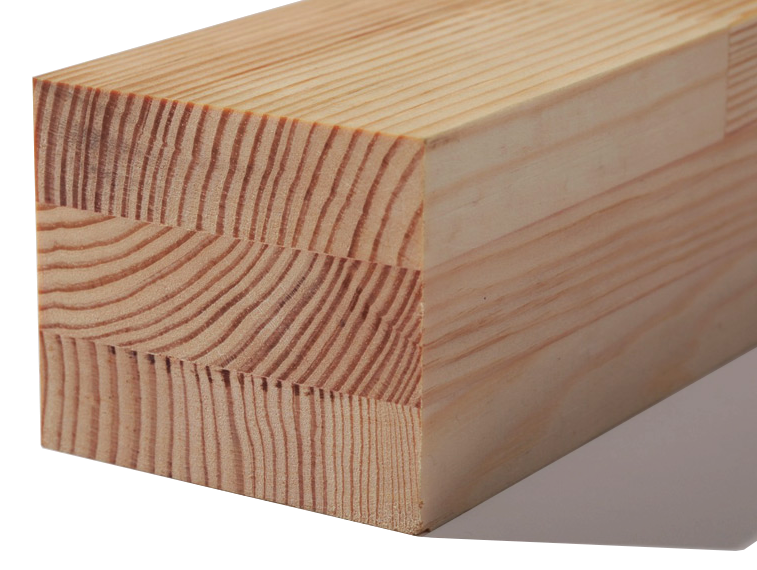

Дерево - чистый, природный материал, который обладает прекрасными технологическими свойствами. Сопротивление теплопередаче деревянного окна 0,67-0,77 м²·К/Вт, в то время как в металлопластикового около 0,5 м²·К/Вт.

Благодаря высокотехнологичному производству, оборудованном по европейским стандартам, мы производим широкий ассортимент оконных профилей, каркасов и окон самых разнообразных конструкций по современным европейским стандартам. Современное оборудование позволяет выпускать высококачественные изделия с гарантией не менее 15 лет, отвечающие всем нормам мирового стандарта по доступным широкому кругу населения ценам, что также является важным фактором успеха предприятия! На базе нашего предприятия мы имеем весь цикл производства и автоматизированный производственный комплекс, обладающий большими мощностями и существенно влияющий на снижение цены продукта.

При изготовлении деревянных профилей используется только натуральная древесина (дуб, сосна). А благодаря технологии изготовления трехслойного клееного бруса обеспечивается долговечность, высокая прочность (на 80% больше, чем у окон из массива), неизменность размеров и прекрасные эксплуатационные свойства, причем полностью сохраняется живая красота, уют и теплота природного материала.
Именно такие «экономные и тихие окна» уже много лет чрезвычайно популярны в Германии и Скандинавии.
Мы изготавливаем деревянные оконные рамы, которые лучше сохраняют тепло, предотвращие появление конденсата на створке. Сопротивление теплопередаче деревянного окна 0,67-0,77 м²·К/Вт, в то время как в металлопластикового около 0,5 м²·К/Вт.
Специальная обработка древесины антисептиком, покрытие грунтовкой и эластичным лаком или краской гарантируют комфортность, привлекательный вид, экологичность натурального материала.
Большое предложение конструкционных решений воплотит все ваши идеи в реальность!